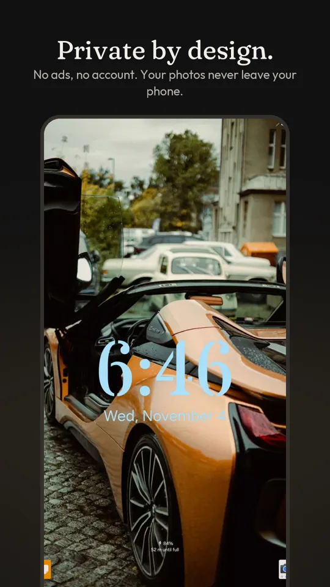
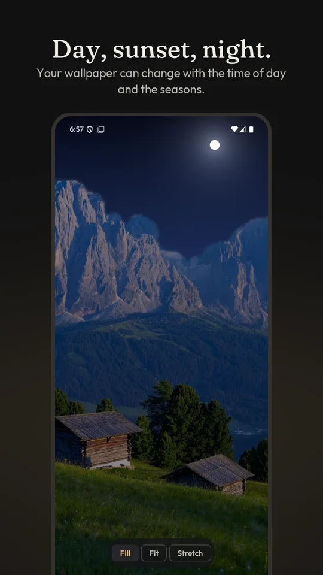
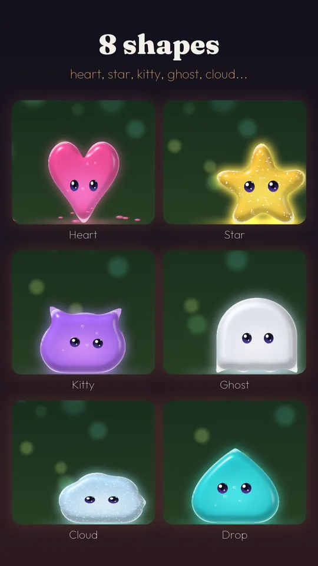
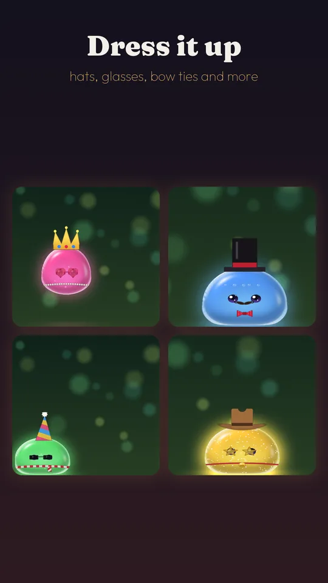

Deine Videos und Fotos als Live-Hintergrund für Android.
Wähle ein Video, GIF oder Foto auf deinem Handy und sieh es in Schleife auf deinem Startbildschirm. Erstelle eine Playlist und dein Hintergrund wechselt von selbst, mit 123 Übergängen dazwischen.
Kostenlos bei Google PlayKeine Werbung. Kein Konto. Deine Dateien verlassen nie dein Handy.

Unsere Apps
LoopPaper
Deine Videos, GIFs und Fotos als Live-Hintergrund, mit 123 Übergängen.
Kostenlos bei Google PlayLoopPaper Studio
Erwecke ein Foto zum Leben: ziehende Wolken, fließendes Wasser, Auren und mehr.
LoopPaper Studio ↓Loopy
Ein weiches Wackelpudding-Haustier für deinen Startbildschirm. Zieh es an und bring ihm Tricks bei.
Loopy ↓Sieh es in Bewegung
123 Übergänge zwischen deinen Bildern




Was es kann
Video-Hintergrund
Jedes Video oder GIF auf deinem Handy, beliebig lang. Sieh die Schleife vorher, kürze sie und wähle den Startpunkt.
Hintergrund-Wechsler
Playlists aus Videos, GIFs und Fotos, die von selbst wechseln, mit Zufallswiedergabe ohne Wiederholungen.
123 Übergänge
Wasser, Lava, Glas, Sand, Schwarzes Loch, Anime, Comic, Retro und mehr, mit echter Physik.
Fotos, die lebendig werden
Die Person oder das Haustier auf deinem Foto atmet, blinzelt und neigt sich zu deinem Finger.
LoopPaper Studio
Erwecke deine eigenen Fotos zum Leben: ziehende Wolken, fließendes Wasser, Fenster, die nachts leuchten, Auren, Anime-Effekte und Cinemagramme. 3 sind kostenlos.
Dein Foto als Stoff
Ein Banner, eine Fahne, ein Wandteppich oder Wimpel, der beim Neigen schwingt, oder Theatervorhänge, die sich beim Entsperren öffnen. Wähle Seide, Samt oder Leinen und Wind von still bis Sturm.
Eine Uhr hinter deinem Motiv
Uhrstile wie bei Flaggschiff-Handys, um oder hinter die Person auf deinem Bild gesetzt.
Für Foldables gemacht
Eine eigene Playlist für Innen- und Außendisplay, Buch- und Tischmodus.
Schont den Akku
Ruht, wenn der Bildschirm aus ist, und kann im Energiesparmodus pausieren.
Privat
Keine Werbung, kein Konto, kein Tracking. Deine Fotos bleiben auf deinem Handy.
LoopPaper Studio: erwecke deine Fotos zum Leben
Lass in jedem Foto den Himmel ziehen, Wasser fließen und Schnee fallen, füge Auren und leuchtende Augen hinzu, tausche den Himmel gegen einen Sonnenuntergang oder eine Sternennacht und lege es als Live-Hintergrund fest oder teile es als Video. Die KI läuft offline auf deinem Handy. 3 sind kostenlos; Pro ist ein einmaliger Kauf, kein Abo.




Im Test bei Google Play. Tritt der Testgruppe bei, dann: Tester werden
Loopy: ein Wackelpudding-Haustier für deinen Startbildschirm
Loopy ist ein kleiner Wackelpudding-Freund mit echter Weichkörper-Physik. Es wird platt, wackelt, quetscht sich zwischen deinen App-Symbolen durch und rutscht, wenn du dein Handy neigst. Füttere es einmal am Tag und es lernt Tricks, spiel Leckerli-Fangen und zieh es mit Farben, Formen, Gesichtern und Hüten an.




Im Test bei Google Play. Tritt der Testgruppe bei, dann: Tester werden
Fragen
Wie lege ich ein Video als Hintergrund auf Android fest?
Installiere LoopPaper, tippe auf Auswählen, wähle ein Video oder GIF von deinem Handy, sieh dir die Schleife in der Vorschau an und tippe auf Als Hintergrund festlegen. Du kannst auch in der Galerie oder in Google Fotos bei einem Video auf Teilen tippen und LoopPaper wählen.
Ist LoopPaper kostenlos?
Ja. Jedes Video, GIF oder Foto als Live-Hintergrund festzulegen ist kostenlos, ohne Werbung, ohne Wasserzeichen und ohne Konto. LoopPaper Plus ist ein optionaler Einmalkauf, der unbegrenzte Playlists, alle 123 Übergänge und die Extra-Effekte freischaltet. Die 7-tägige Testphase startet erst, wenn du auf Test starten tippst, und wird nie zum Abo.
Kann mein Hintergrund automatisch wechseln?
Ja. Erstelle eine Playlist aus Videos, GIFs und Fotos und LoopPaper wechselt von selbst zwischen ihnen, mit einem Übergang dazwischen.
Verbraucht ein Live-Hintergrund viel Akku?
LoopPaper ruht, wenn der Bildschirm aus ist, und kann im Energiesparmodus pausieren. Es arbeitet also nur, während du hinschaust.
Werden meine Fotos irgendwo hochgeladen?
Nein. Deine Dateien bleiben auf deinem Handy. LoopPaper lädt sie nie hoch, und alles, was es mit einem Foto macht, läuft auf dem Handy.